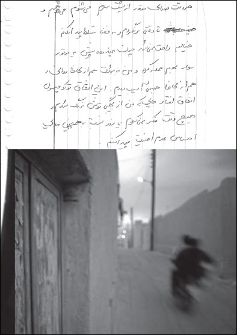

|
|

کارگاه های مقابله با خشونت و کتابچه روایت های زنانه
شنبه6 آذر 1389
تغییر برای برابری - خشونت خانگی، خشونت روزمره ای است که همه زنان به نوعی آن را تجربه کرده اند. در آستانه روز جهانی مبارزه با خشونت علیه زنان، اعضای کمپین یک میلیون امضا در چند شهر ایران کارگاه مبارزه با خشونت خانگی را برگزار کردند. این کارگاه ها در یک هفته و در شهرهای مشهد، تهران و زنجان برگزار شد. ۱۱ پسر و ۷ دختر در کارگاه تهران شرکت داشتند، ۴۲ زن در کارگاه زنجان و ۴ مرد و ۹ زن در کارگاه مشهد و تعدادی نیز بصورت مجزا آموزش دیدند.
از عمر این کارگاه ها در ایران بیش از 10 سال می گذرد، اما تفاوت کارگاه های این دوره در بخش نوشتن و ثبت خاطره خشونت بود. تسهیلگران این کارگاه ها بعد از آموزش مبانی خشونت و اشکال خشونت به موضوع اهمیت نوشتن از خشونت پرداختند. آنان زنان شرکت کننده در این کارگاه ها را تشویق به نوشتن روایت خود از خشونت کردند. روایت های این زنان نشان می دهد که هیچ زنی در تجربه خشونت تنها نیست و همه زنان در این تجربه با هم شریکند.
از زنان شرکت کننده در این کارگاه خواسته شده بود تصویر و یا شئی را که برای آنان یادآور یکی از تجربه های خشونت است، همراه خود بیاورند و درباره آن بنویسند. روایت های زنان از تجربه هایشان نشان می دهد حتی اگر عامل خشونت از بین رفته باشد، نمادها خاطره آن را زنده نگه می دارند.

اگر چاقو اولین چیزی باشد که در ادبیات مردانه خشونت را به یاد می آورد، روایت های زنان چیز دیگری را نشان می دهد. برای این زنان چاقو اولین خاطره نیست. چه کسی باور می کند برای زنان "سیب زمینی"، "خاکستر سیگار"، "مداد قرمز"، "لک چای روی فرش"، "انگشتر عقیق" و یا آئینه نماد خشونت باشند. زنان هر روز با این نمادها زندگی می کنند و برای اولین بار درباره این نمادها نوشته اند.
برای یکی از آنان گوشه ای در خانه وجود دارد که هر بار به امنیت آنجا پناه می برد. هر بار که به آن گوشه خانه نگاه می کند یاد تنهایی خودش می افتد و اشک هایی که بارها در آن گوشه ریخته است. او نوشته است حالا این گوشه خانه را دوست دارد. دیگری حسرت یک خواب سنگین را دارد. به هر صدایی از خواب می پرد چون خواب کودکی او را سایه پدرش پر کرده است که شب ها به سراغش می رفته. زنی دیگر هر بار که سیب زمینی پوست می گیرد یاد مادرش می افتد که وقتی به او درباره پوست کلفت سیب زمینی تذکر داده، پدرش به مادر او حمله کرده و کتک اش زده است.
کتری، ماهیتابه، تنگ آب، تخت خواب ... با همه این ها می توان خانه ای را تزئین کرد و اسمش را گذاشت خانه وحشت.
این کتابچه روایتهای زنان آسیب دیده از انواع خشونتهای خانگی است به همراه عکس نمادهایی که خشونت را برای آنان یادآوری می کند.